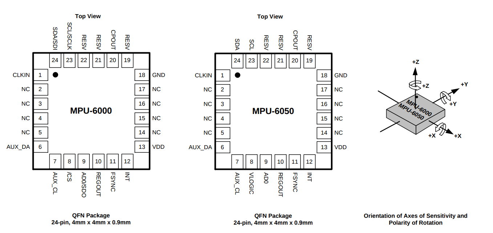

Introduction
MPU-6050 is an IMU (Inertial Measurement Unit) that can detect rotation and acceleration. Inside the MPU-6050, it has three independent gyroscopes (angular rate sensors) to detect the rotation happened on the X, Y, Z axis. It also has three independent accelerometer sensors on the X, Y, Z asix to detect the accelerations.
Features
- MPU-6050 has a master I2C interface (XDA, XCL) that can be used to connect to a third-party magnetometer.
- MPU-6050 only support 400KHz I2C communication (SDA, SCL) with the MCU
- I2C address is 110100x, the x is controlled by the AD0 pin (Pin 9). AD0 = 1, x = 1.
- It has an internal DMP (digital motion processing) engine to detect 3D gesture and generate interrupts (at INT Pin 12)
- Adjustable detection range (-2g, 2g), (-4, 4g), (-8, 8g), and (-16, +16g); (-250, 250 degree pre second), (-500, 500 dps), (-1000, +1000dps), and (-2000, 2000dps)
- 1024 byte FIFO buffer lets the MCU sleep during the MPU gather data.

MPU-6000 vs MPU-6050
MPU-6000 has the SPI interface, but the MPU-6050 does not.
MPU-6050 has a VLOGIC pin that can be used to set the voltage logic.